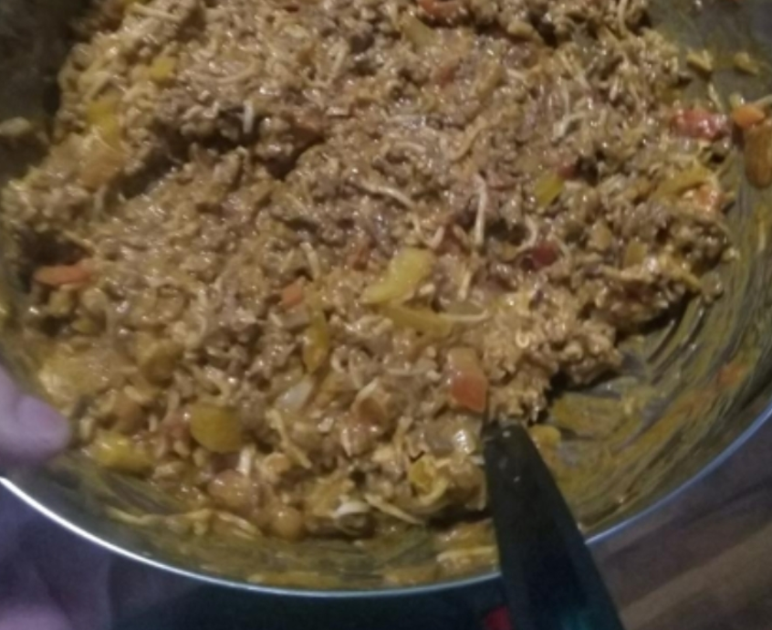

Maailman paras nistipata!!!

Nistipata on suomalaisten nistien herkkua! Tällä reseptillä saat kuvan mukaisen herkullisen padan.
Ainexet:
- 6dl makaronia
- 400g jauheliha
- 1 sipuli
- 1 pullo ketsuppia
Ohjeet:
- Keitä makaronit 12min
- Paista jauheliha ja sipuli pannulla
- Kaada jauheliha ja makaronit astiaan ja lisää ketsuppi
- Nauti